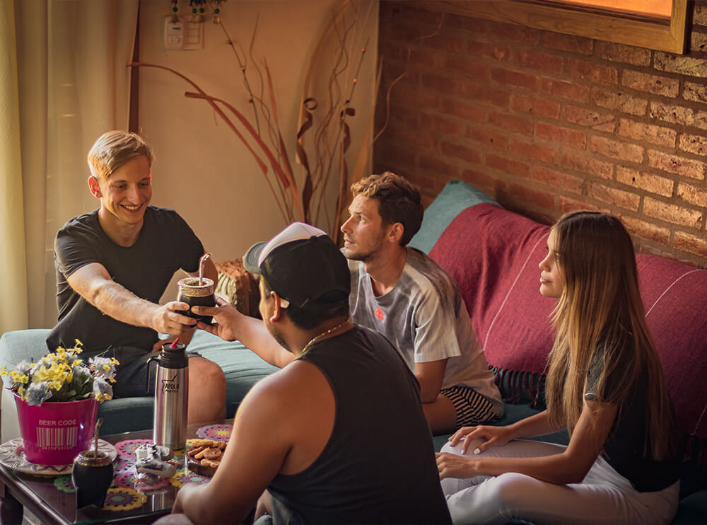

¿QUIÉNES SOMOS?
Comenzamos este emprendimiento después de darnos cuenta de que el mate es una bebida muy popular en Argentina, pero que no había muchas tiendas que ofrecieran una amplia variedad de mates y accesorios de alta calidad. Nuestra pasión por el mate y el deseo de llenar este vacío en el mercado, decidimos crear nuestra propia tienda de mates y accesorios.
Empezamos por investigar el mercado y los productos que ofreceriamos. Probamos diferentes tipos de mates y accesorios para determinar cuáles eran los mejores en términos de calidad y valor. Aprendimos sobre los diferentes materiales y estilos de mates, desde los tradicionales de calabaza hasta los más modernos de silicona.
Después de seleccionar los productos, diseñamos nuestro sitio web y establecimos una presencia en línea a través de las redes sociales. Nos aseguramos de que los productos fueran fáciles de encontrar y comprar en línea.
NUESTRA VISIÓN
Convertirnos en la tienda virtual líder en la venta de mates y accesorios en todo el mundo, ofreciendo una amplia variedad de productos y servicios personalizados, con un enfoque en la sostenibilidad y el cuidado del medio ambiente.
NUESTRA MISIÓN
Ofrecer productos de calidad para los amantes de los mates y los accesorios que les permitan disfrutar de una experiencia única, fomentando la cultura y la tradición argentina.